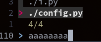
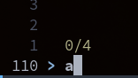
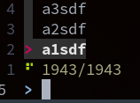

Python's dup2 Method / Intercepting StdIn¤
[2022-04-27 06:27]
That time of the year, where I want to do "simple" terminal stdin redirection/duplication and realize I forgot everything I knew about it. Lets write it down this time.
Output Examples¤
~/gk1 master ?7 ❯ cat tee.py; echo 'output:'; python tee.py; cat log
import sys
class tee :
def __init__(self, _fd1, _fd2) :
self.fd1 = _fd1
self.fd2 = _fd2
def __del__(self) :
if self.fd1 != sys.stdout and self.fd1 != sys.stdout :
self.fd1.close()
if self.fd2 != sys.stdout and self.fd2 != sys.stdout :
self.fd2.close()
def write(self, text) :
self.fd1.write(text)
self.fd2.write(text)
def flush(self) :
self.fd1.flush()
self.fd2.flush()
stdoutsav = sys.stdout
outputlog = open('log', "w")
sys.stdout = tee(stdoutsav, outputlog)
print('foo')
output:
foo
foo
import os
os.dup2(1, 3)
print('hi', file=os.fdopen(3, 'w'))
- Both stdout and stderr need to be streamed.
- Both of them need to be non-blocking: when there is no output and when there are too much output.
- Do not want to use Threading or multiprocessing, also not willing to use pexpect.
import subprocess as sbp
import fcntl
import os
def non_block_read(output):
fd = output.fileno()
fl = fcntl.fcntl(fd, fcntl.F_GETFL)
fcntl.fcntl(fd, fcntl.F_SETFL, fl | os.O_NONBLOCK)
try:
return output.readline()
except:
return ""
with sbp.Popen('find / -name foo',
shell=True,
universal_newlines=True,
encoding='utf-8',
bufsize=1,
stdout=sbp.PIPE,
stderr=sbp.PIPE) as p:
while True:
out = non_block_read(p.stdout)
err = non_block_read(p.stderr)
if out:
print(out, end='')
if err:
print('E: ' + err, end='')
if p.poll() is not None:
break
The newlines are fubared in fzf, this works perfect and fast:
No delay noticable in fzf. nice:
import subprocess as sbp
import fcntl
import os
def non_block_read(output):
fd = output.fileno()
fl = fcntl.fcntl(fd, fcntl.F_GETFL)
fcntl.fcntl(fd, fcntl.F_SETFL, fl | os.O_NONBLOCK)
try:
return output.read(1024)
except:
return
with sbp.Popen(
'fzf',
shell=True,
# universal_newlines=True,
# encoding='utf-8',
# bufsize=1,
stdout=sbp.PIPE,
stderr=sbp.PIPE,
) as p:
while True:
out = non_block_read(p.stdout)
err = non_block_read(p.stderr)
if out:
os.write(1, out)
if err:
os.write(2, err)
# print(err.decode('utf-8')) # , end='')
if p.poll() is not None:
break
The inner process can detect it is not writing to a tty (try it out by calling python in a subproc
and print sys.stdout.isatty(). But fzf does not care - for stdout and err, behaves normally.
Intercept / Control User Input to SubProcess¤
Big question: How to send user input from outside the process into e.g. fzf, i.e. control it.
Up to now we came to the conclusion that doing it from a terminal stream hijacker is the best way: See termcontrol
But can we do it from within python?
I start fzf w/o piping sth into it, pid is 3124845:
Via proc file system? First guess, naa, the fds there are api but not the pty itself.
Writing into those does only produce the illusion that the user typed sth:
with open('/proc/3124845/fd/0', 'a') as fd: fd.write('a');fd.flush()

fzf does not see it - E.g. after we really typed an "a" on the keyboard:

All open fds: lsof -P -n -p <pid>
~/.config/ptpython ❯ lsof -P -n -p 3140976
COMMAND PID USER FD TYPE DEVICE SIZE/OFF NODE NAME
fzf 3140976 gk cwd DIR 0,41 54 18761005 /home/gk/.config/ptpython
fzf 3140976 gk rtd DIR 0,35 160 256 /
fzf 3140976 gk txt REG 0,35 3234120 1629801 /usr/bin/fzf
fzf 3140976 gk mem REG 0,33 1629801 /usr/bin/fzf (path dev=0,35)
fzf 3140976 gk mem REG 0,33 1411886 /usr/lib64/ld-2.33.so (path dev=0,35)
fzf 3140976 gk 0u CHR 136,7 0t0 10 /dev/pts/7
fzf 3140976 gk 1u CHR 136,7 0t0 10 /dev/pts/7
fzf 3140976 gk 2u CHR 136,7 0t0 10 /dev/pts/7
fzf 3140976 gk 3r CHR 5,0 0t0 11 /dev/tty
fzf 3140976 gk 4u a_inode 0,14 0 11950 [eventpoll:3,5]
fzf 3140976 gk 5r FIFO 0,13 0t0 31532188 pipe
fzf 3140976 gk 6w FIFO 0,13 0t0 31532188 pipe
The r/w FIFO at the end is interesting - is FZF maybe internally setting those up to be able to read data here and user input there?
Is it in the filesystem?
Answer - nope. A python program where I open a FIFO on a file reports
python 3154696 gk 3r FIFO 0,41 0t0 18768718 /home/gk/myfifo
I.e. I get the filename. pipe - that is the shell pipe which FZF built, using $FZF_DEFAULT_COMMAND - not for user input.
Also a grep for fifo on fzf source code says nothing about setting such a fifo up - except in tmux mode and for some zshell completion.
Simplified Program¤
Since we do not know what fzf really does internally let's start with a simple python program.
i = input('q> ')
print('have it')
lsof reports
python 3160241 gk 0u CHR 136,11 0t0 14 /dev/pts/11
python 3160241 gk 1u CHR 136,11 0t0 14 /dev/pts/11
python 3160241 gk 2u CHR 136,11 0t0 14 /dev/pts/11
Again the naiv tries just result in stuff getting echoed but the 'have it' never shows up:
From another term I tried:
echo -e 'foo\n' >> /dev/pts/11
echo -e 'foo\x0a\x0c' >> /dev/pts/11
cat /dev/stdin >/dev/pts/11
cat - > /dev/pts/11
Important
There is only one stdin fd and it is owned by the python process itself.
os.dup2¤
DESCRIPTION top
The dup() system call allocates a new file descriptor that refers
to the same open file description as the descriptor oldfd. (For
an explanation of open file descriptions, see open(2).) The new
file descriptor number is guaranteed to be the lowest-numbered
file descriptor that was unused in the calling process.
After a successful return, the old and new file descriptors may
be used interchangeably. Since the two file descriptors refer to
the same open file description, they share file offset and file
status flags; for example, if the file offset is modified by
using lseek(2) on one of the file descriptors, the offset is also
changed for the other file descriptor.
The two file descriptors do not share file descriptor flags (the
close-on-exec flag). The close-on-exec flag (FD_CLOEXEC; see
fcntl(2)) for the duplicate descriptor is off.
dup2()
The dup2() system call performs the same task as dup(), but
instead of using the lowest-numbered unused file descriptor, it
uses the file descriptor number specified in newfd. In other
words, the file descriptor newfd is adjusted so that it now
refers to the same open file description as oldfd.
If the file descriptor newfd was previously open, it is closed
before being reused; the close is performed silently (i.e., any
errors during the close are not reported by dup2()).
The steps of closing and reusing the file descriptor newfd are
performed atomically. This is important, because trying to
implement equivalent functionality using close(2) and dup() would
be subject to race conditions, whereby newfd might be reused
between the two steps. Such reuse could happen because the main
program is interrupted by a signal handler that allocates a file
descriptor, or because a parallel thread allocates a file
descriptor.
Note the following points:
* If oldfd is not a valid file descriptor, then the call fails,
and newfd is not closed.
* If oldfd is a valid file descriptor, and newfd has the same
value as oldfd, then dup2() does nothing, and returns newfd.e
os.dup2() method in Python is used to duplicate a file descriptor fd to a given value fd2. The file descriptor will be duplicated to fd2 only if fd2 is available and duplicated file descriptor is inheritable by default.
With 'inheritable':
A Boolean value, True or False. The default value of this parameter is True, which means duplicated file descriptor is inheritable by child processes. To make it non-inheritable set it to False.
~ ❯ cat aa.py
import os
fn = 'myfifo'
os.unlink(fn) if os.path.exists(fn) else 0
os.mkfifo(fn)
fd = open(fn)
os.dup2(fd.fileno(), 0)
i = input('q> ')
print('have it:', i)
With this we can 'fake' user input from outside the process:
~ ❯ python aa.py &
[1] 3164080
~ ❯ echo answer > myfifo
q> %
have it: answer
[1] + 3164080 done python aa.py
Nice.
Nonblocking: fd = os.open(fn, os.O_RDONLY | os.O_NONBLOCK) - but that breaks the input method.
Question: Is stdin avail also from within the process?
Answer: No.
We get terminal feedback of what we type but that's all - process now ONLY has the FIFO for user input.
Because - see above:
If the file descriptor newfd was previously open, it is closed
before being reused; the close is performed silently (i.e., any
errors during the close are not reported by dup2()).
If we duplicate the other way round (os.dup(0, fd_of_fifo)) then the python process keeps having
normal stdin behaviour - but the fifo is not writeable anymore from outside.
Summary So Far¤
What we got so far is nothing else than a straight forward input redirection:
os.mkfifo(fn)
fd = open(fn)
sys.stdin = fd
=> Where is an actual duplication, i.e. stdin available from 2 processes?
pty.fork¤
Extremely instructive:
https://stackoverflow.com/questions/4022600/python-pty-fork-how-does-it-work
#!/usr/bin/env python3
import sys
import os
import time
import pty
import subprocess
def log(chars):
sys.stdout.write(' > ' + chars + '\n')
def main():
# fork this script such that a child process writes to a pty that is
# controlled or "spied on" by the parent process
(child_pid, fd) = pty.fork()
# A new child process has been spawned and is continuing from here.
# The original parent process is also continuing from here.
# They have "forked".
if child_pid == 0:
log('This is the child process fork, pid %s' % os.getpid())
log('Child process will run a subprocess controlled by the parent process')
log('All output, including this text, will be written to a pty and handled ')
log('by the parent process.')
# redirect stdout/stderr if you want to here
subprocess.run(['bash'])
else:
log('This is the parent process fork, pid %s' % os.getpid())
log('the fd being read from, %s, is not stdout nor stderr; it is ' % fd)
log('simply what the child is trying to write to its tty. ')
log('stdout/stderr are combined along with terminal escape codes.')
print()
# Read initial output of child process before "typing" anything in its pty
sys.stdout.write(os.read(fd, 1024).decode())
print()
# Run any bash commands you want. I/O to the fd is handled as if you are typing
# at a terminal.
os.write(fd, 'ls\n'.encode())
os.write(fd, 'which git\n'.encode())
# you can even test tab completions
os.write(fd, 'git sta\t\t'.encode())
while True:
log('parent will read 1024 bytes that the child wrote to its pty')
log('if no new output is available, parent will wait. Exit with ctrl+c.\n')
# take out decode() to see raw bytes the child wrote to its pty
sys.stdout.write(os.read(fd, 1024).decode())
time.sleep(1)
if __name__ == '__main__':
main()
Send Stdin Items¤
Can we control FZF?
With this we can send search results via a fifo:
mkfifo foo
Then start:
import socket, subprocess, os
s = open('foo')
print('1')
os.dup2(s.fileno(), 0, inheritable=True) # inheritable True = default
print('2')
p = subprocess.call(['fzf'])
print('done')
(will block waiting on open - nothing printed)
Then start:
with open('foo', 'w') as fd:
n = 0
while 1:
for i in range(1000):
n += 1
fd.write(f'a{n}sdf\n')
breakpoint()
And you see fzf waiting for more - until you say fd.close() - here after the second chunk sent:

(fzf progress indicator eager for more)
If we flushed in the sender we will see in fzf nice chunks of 1000 records.
Summary: We can dynamically control the data red by fzf - from a python parent process. But faking User Input is unsolved.
Solution¤
Here is the solution: https://github.com/asciinema/asciinema/blob/develop/asciinema/recorder.py
They meanwhile not just simply write what is written on the pty - but really can differentiate the source, incl. 'i' - input.
Nice.